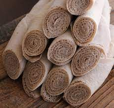

Ethiopian Food
Injera

Description
Injera is made with teff, a tiny, round grain that flourishes in the highlands of Ethiopia. While teff is very nutritious, it contains practically no gluten. This makes teff ill-suited for making raised bread, however injera still takes advantage of the special properties of yeast.
Ingredients to make Injera
Steps to make Injera
- Put the teff flour in the bottom of a mixing bowl, and sift in the all-purpose flour.
- Slowly add the water, stirring to avoid lumps.
- Put the batter aside for a day or more (up to three days) to allow it to ferment. ...
- Stir in the salt.
- Heat a nonstick pan or lightly oiled cast-iron skillet until a water.